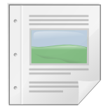

What's new?


มีอะไรใหม่?
มีซอฟต์แวร์หลายตัวที่มีการปรับปรุงในเวอร์ชันนี้ ถ้าคุณเคยติดตั้ง
โปรแกรมใน Chantra เวอร์ชันก่อน คุณอาจจะติดตั้งเวอร์ชันใหม่
ถ้าคุณต้องการความสามารถใหม่ๆ
| โปรแกรม | เวอร์ชั่น |
| 7-Zip | 4.65 |
| Audacity | 1.2.6 |
| Blender | 2.48a |
| Celestia | 1.5.1 |
| ClamWin | 0.94.1 |
| Dia | 0.96.1-9 |
| Drupal | 6.10 |
| Freemind | 0.8.1 |
| FileZilla | 3.2.2.1 |
| Firefox | 3.0.8 |
| Gantt Project | 2.0.9 |
| GIMP | 2.6.6 |
| Infrarecoreder | 0.46.2 |
| Inkscape | 0.46 |
| Joomla | 1.5.9 |
| Kompozer | 0.7.10 |
| Lbreakout2 | 2.5.1 |
| Moodle | 1.9.4 |
| Notepad++ | 5.3.1 |
| Open Clip Art | 0.18 |
| OpenOffice.org | 3.0.1 |
| PDFCreator | 0.9.7 |
| Pidgin | 2.5.5 |
| Putty | 0.6 |
| SMF | 1.1.8 |
| Subversion | 1.6.0 |
| SuperTux | 0.1.3 |
| Thunderbird | 2.0.0.19 |
| TuxMath | |
| Tux Paint | |
| Tux Typing 2 | |
| VLC | 0.9.8a |
| XAMPP | 1.7.0 |